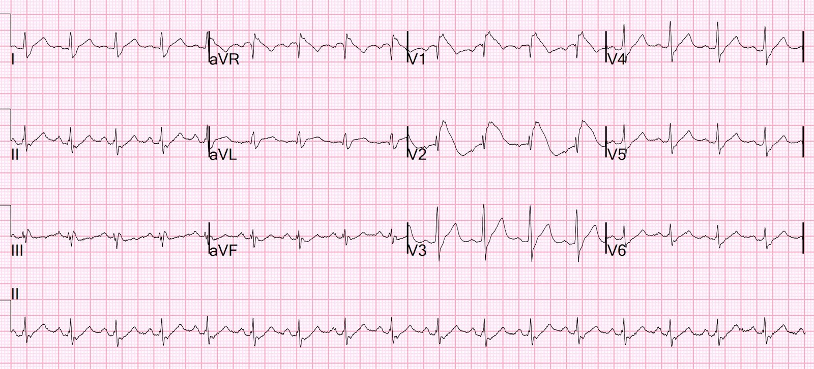
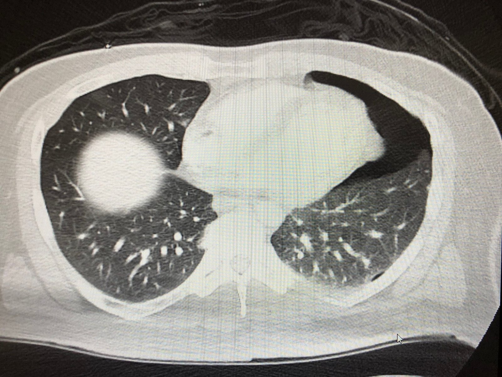
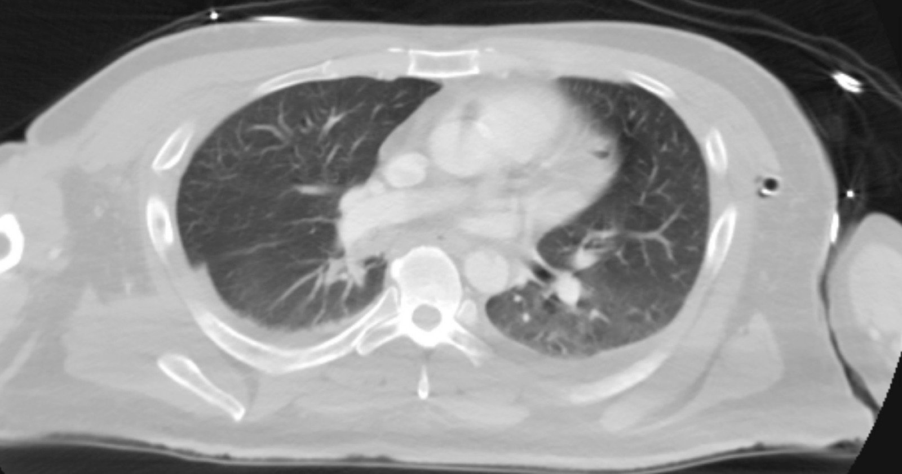
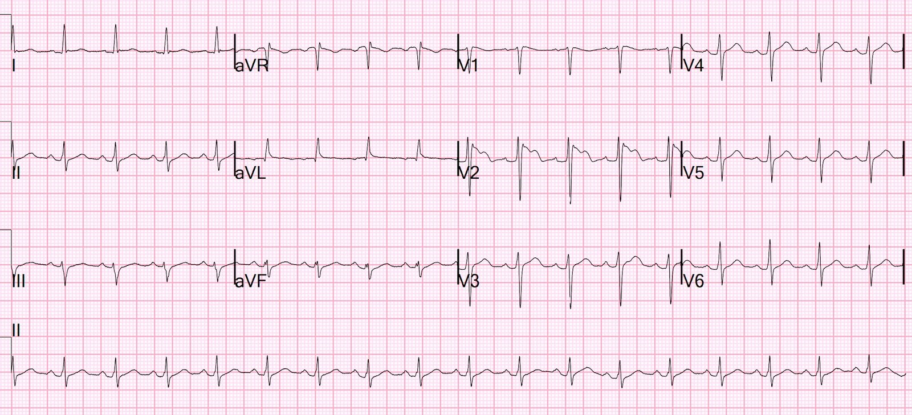
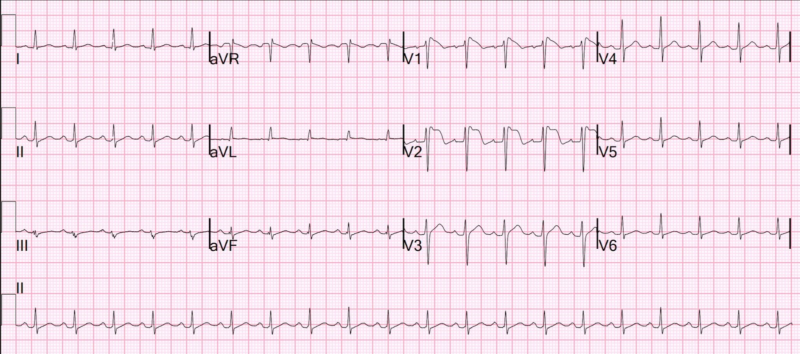
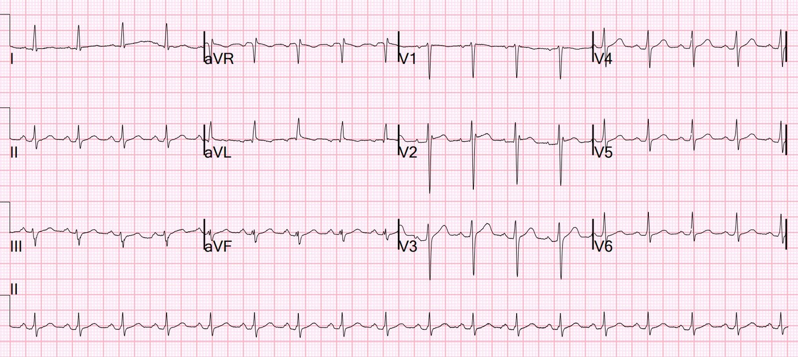
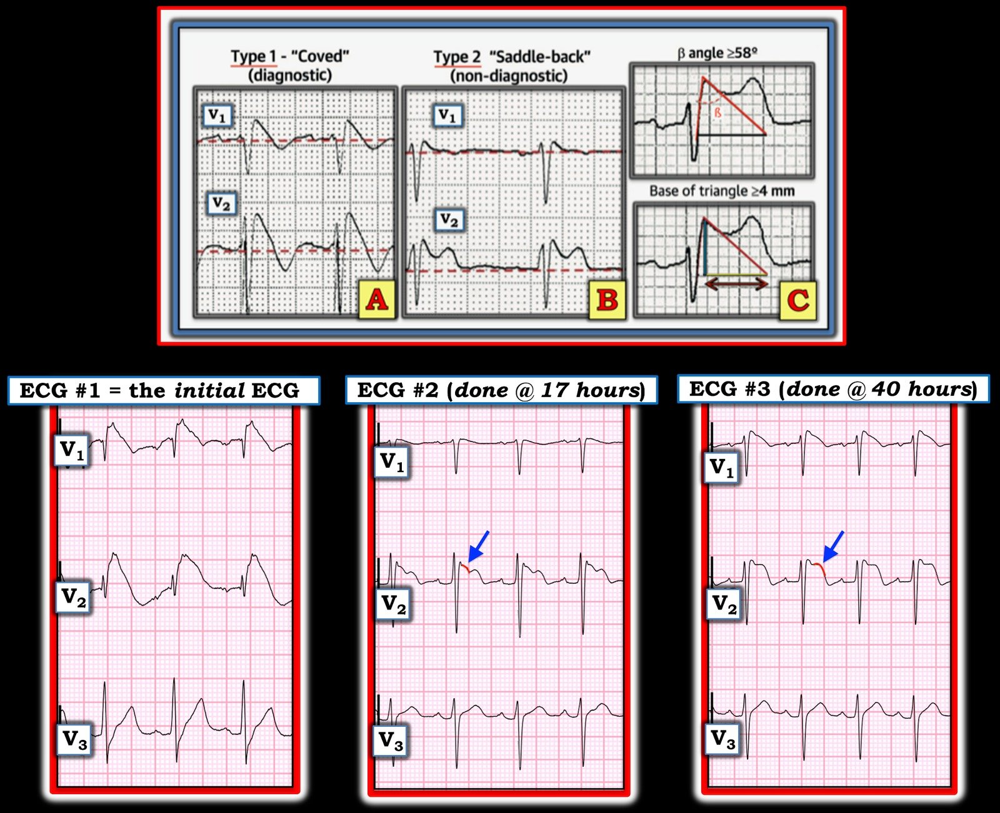

25/11/2022 — Bệnh nhân bị tai nạn một xe: ST chênh lên này là gì, với troponin đỉnh 6500 ng/L?
Bản dịch tiếng Việt của bài "Patient in Single Vehicle Crash: What is this ST Elevation, with Peak Troponin of 6500 ng/L?" – Dr. Smith’s ECG Blog. Giữ nguyên toàn bộ 8 hình ảnh của bản gốc.
Một nam giới ở độ tuổi 30 bị tai nạn một xe (single vehicle crash) và bị đa chấn thương.
Như một phần thường quy trong đánh giá chấn thương nặng, bệnh nhân được ghi điện tâm đồ:


Có hình ảnh rSR” ở V1 và V2, với đoạn ST dốc xuống và sóng T đảo ngược, rất giống kiểu hình sao chép Brugada típ 1 (Brugada Type 1 phenocopy). Tôi được cho xem điện tâm đồ này và nghĩ rằng có thể là Brugada, nhưng tôi nghi ngờ đụng dập cơ tim thất phải (Right Ventricular, RV) nhiều hơn. Thất phải là phần nằm phía trước nhất trong lồng ngực và dễ bị đụng dập nhất khi có chấn thương ngực phía trước. Hơn nữa, mức ST chênh lên như thế này là rất bất thường đối với Brugada.
Mặt khác, vụ tai nạn không giải thích được. Phải chăng bệnh nhân đã có một cơn VT do Brugada và mất ý thức khi đang lái xe?
Đây là một lát cắt CT ngực của bệnh nhân
Lưu ý có tràn khí màng phổi, nhưng vùng tràn khí màng phổi nằm dưới các chuyển đạo V3-V5, không phải V1 và V2.
Mặt khác, thất phải nằm ngay dưới các chuyển đạo V1 và V2; điều này làm cho tràn khí màng phổi ít có khả năng là nguyên nhân của điện tâm đồ bất thường.


Tràn khí màng phổi được xử trí bằng ống dẫn lưu ngực để phổi nở lại


Ở giờ thứ 17, một điện tâm đồ khác được ghi:


Lúc này hình ảnh ít ấn tượng hơn nhiều và có hình thái của Brugada típ 2
Troponin I độ nhạy cao (hs troponin I) đạt đỉnh 6500 ng/L — điều này gợi ý mạnh mẽ đụng dập cơ tim. Liệu có kèm cả Brugada không?
Đã làm siêu âm tim. Đây là kết quả:
Phân suất tống máu thất trái ước tính là 50 %.
Không ghi nhận rối loạn vận động thành thất trái.
Thất phải lớn nổi bật.
Chức năng tâm thu thất phải bình thường, ở giới hạn dưới của bình thường.
Ở giờ thứ 40, một điện tâm đồ khác được ghi:


Một lần nữa, điện tâm đồ có các đặc điểm của Brugada típ 1
Bác sĩ điện sinh lý được mời hội chẩn đã lo ngại về Brugada:
“Chưa rõ điều gì đã dẫn đến vụ tai nạn xe cơ giới của bệnh nhân. Bệnh nhân không thể nhớ lại các sự kiện trước vụ tai nạn (ngất, chóng mặt, choáng váng). Bệnh nhân có tiền sử gia đình đáng lo ngại về rối loạn nhịp. Với hoàn cảnh của vụ tai nạn xe, chúng tôi cho rằng tai nạn là do một rối loạn nhịp nền. Tôi nghĩ troponin tăng là do tổn thương cơ tim cấp (không phải huyết khối cấp) liên quan đến đa chấn thương, có thể là đụng dập tim, và điều đáng yên tâm là bệnh nhân không có rối loạn vận động thành trên siêu âm tim qua thành ngực (TTE).”
Đã chụp MRI:
1) Chức năng thất trái bình thường, không có rối loạn vận động thành
2) Kích thước tất cả các buồng tim bình thường
3) Không có bằng chứng sẹo cơ tim thất trái trên các chuỗi xung
ngấm thuốc muộn sau tiêm thuốc tương phản
4) Giảm động thành tự do thất phải kèm ngấm thuốc muộn, gợi ý đụng dập thất phải. Vùng này có vẻ nằm ngay dưới chỗ gãy xương ức. Tại thời điểm này, khuyến nghị chụp lại MRI tim ngắn hạn, tập trung đánh giá thất phải, vài ngày sau khi bệnh nhân hồi phục.
2 tuần


Đây là ghi chú cuối cùng của bác sĩ điện sinh lý:
Chưa rõ điều gì đã dẫn đến vụ tai nạn xe cơ giới của bệnh nhân. Bệnh nhân không thể nhớ lại các sự kiện trước vụ tai nạn (ngất, chóng mặt, choáng váng, dù có kể là cảm thấy một tiếng “bụp”). Bệnh nhân có tiền sử gia đình đáng lo ngại về rối loạn nhịp: cha của bệnh nhân đã cần đặt một loại thiết bị nào đó (máy tạo nhịp vĩnh viễn [PPM], ICD, không rõ) khi còn trẻ. Bệnh nhân có hình ảnh Brugada trên điện tâm đồ kèm khả năng đã ngất, điều này gợi lo ngại về một rối loạn nhịp thất kịch phát nền. Tuy nhiên, MRI tim cho thấy sẹo mà, xét theo vị trí, cũng có thể liên quan đến gãy xương ức.
Trước khả năng có rối loạn nhịp thất, chúng tôi khuyến nghị bệnh nhân được mang áo khử rung Zoll LifeVest trước khi ra viện và chụp lại MRI tim sau 2-3 tuần.
Tùy kết quả MRI, có thể cân nhắc đặt ICD nếu kết quả có vẻ phù hợp với hội chứng Brugada hơn là tổn thương thất phải do đụng dập. Trong thời gian chờ, sẽ dùng LifeVest làm cầu nối trong khi tiếp tục thăm dò sẹo thất phải.
Chẩn đoán:
1. Đụng dập cơ tim thất phải chắc chắn và
2. Có thể có hội chứng Brugada nền.
Nếu và khi tôi nhận được xác nhận hoặc bác bỏ hội chứng Brugada, tôi sẽ cập nhật bài viết này.
Xem các ca đụng dập cơ tim khác của chúng tôi và các ca liên quan (một số ca có chẩn đoán quan trọng KHÁC VỚI đụng dập cơ tim!):
Bạn nhất định phải đọc bài này: A Child with Blunt Trauma (Một trẻ bị chấn thương kín) — Hãy xem điện tâm đồ có thể cho thấy chắc chắn đụng dập cơ tim nhưng lại kín đáo như thế nào, và điều gì xảy ra nếu bạn bỏ sót.
A man in his 40s with multitrauma from motor vehicle collision (Một nam giới ở độ tuổi 40 bị đa chấn thương do tai nạn xe cơ giới)
Massive Transfusion for Motorcycle Collision with Hemorrhage, Troponin Elevated. (Truyền máu khối lượng lớn do tai nạn xe máy kèm xuất huyết, troponin tăng.)
ECG of pneumopericardium and probable myocardial contusion shows typical pericarditis (Điện tâm đồ của tràn khí màng ngoài tim và nhiều khả năng đụng dập cơ tim cho thấy hình ảnh viêm màng ngoài tim điển hình)
Male in 30’s, 2 days after Motor Vehicle Collsion, complains of Chest Pain and Dyspnea (Nam giới ở độ tuổi 30, 2 ngày sau tai nạn xe cơ giới, than đau ngực và khó thở)
Head On Motor Vehicle Collision. ST depression. Myocardial Contusion? (Tai nạn xe cơ giới đâm trực diện. ST chênh xuống. Đụng dập cơ tim?)
Gunshot wound to the chest with ST Elevation (Vết thương do đạn bắn vào ngực kèm ST chênh lên)
Would your radiologist make this diagnosis, or should you record an ECG in trauma? (Bác sĩ chẩn đoán hình ảnh của bạn có đưa ra được chẩn đoán này không, hay bạn nên ghi điện tâm đồ trong chấn thương?)
Blunt Trauma in a Child (Chấn thương kín ở trẻ em)
40-something male in a head-on Motor Vehicle Collision and Splenic Injury (Nam giới ở độ tuổi 40 bị tai nạn xe cơ giới đâm trực diện và tổn thương lách)

===================================
BÌNH LUẬN CỦA TÔI, bởi KEN GRAUER, MD (25/11/2022):
===================================
Bài viết rất thú vị của Dr. Smith về một nam giới ở độ tuổi 30 bị đa chấn thương do tai nạn xe cơ giới. Các vấn đề MẤU CHỐT được làm nổi bật qua tiêu đề bài viết của Dr. Smith = “ST chênh lên này là gì, với troponin đỉnh 6500 ng/L?”
Khi lần đầu nhìn thấy điện tâm đồ ban đầu trong ca hôm nay — tôi đã diễn giải các thay đổi ở chuyển đạo V1,V2 là phù hợp với hình ảnh Brugada típ 1, nhiều khả năng nhất là kiểu hình sao chép Brugada (Brugada Phenocopy).
- Như chúng tôi đã bàn luận trong nhiều bài khác trên Dr. Smith’s ECG Blog (Xem Bình luận của tôi ở cuối trang trong bài ngày 5 tháng Năm năm 2022) — ngày càng nhiều tình trạng khác ngoài hội chứng Brugada được phát hiện là có thể tạm thời tạo ra hình ảnh điện tâm đồ Brugada típ 1. Những tình trạng này bao gồm (trong số các tình trạng khác) — bệnh lý sốt cấp — biến đổi trương lực thần kinh tự chủ — hạ thân nhiệt — thiếu máu cục bộ-nhồi máu — rối loạn nhịp ác tính — ngừng tim — và đặc biệt là tăng kali máu. Bệnh nhân có những tình trạng như vậy, vốn có thể bắt chước thoáng qua các dấu hiệu điện tâm đồ của hình ảnh Brugada típ 1, được gọi là có kiểu hình sao chép Brugada. Tầm quan trọng của việc nhận biết hiện tượng kiểu hình sao chép Brugada này — là việc điều chỉnh tình trạng nền có thể làm hình ảnh điện tâm đồ Brugada típ 1 biến mất, với tiên lượng tốt hơn nhiều so với bệnh nhân mắc hội chứng Brugada thực sự.
- Kazmi và cs. đã báo cáo một ca trong đó chấn thương ngực liên quan thoáng qua với sự xuất hiện hình ảnh điện tâm đồ Brugada típ 1 (J Am Coll Cardiol 73 [9-Supp-1], 2019). Các tác giả đưa ra giả thuyết rằng cơ chế tạo ra hình ảnh điện tâm đồ Brugada típ 1 là chấn thương thành ngực trước gây ra một dòng khử cực không đồng nhất (có thể liên quan đến việc mở các kênh K+ATP nhạy cảm cơ học của tim). Bất thường điện tâm đồ này là thoáng qua trong ca họ báo cáo — phù hợp với kiểu hình sao chép Brugada do chấn thương.
- Một khả năng khác (theo Dr. Smith) — có thể là một rối loạn nhịp ác tính làm thay đổi ý thức đã là nguyên nhân khởi phát của cả vụ tai nạn xe cơ giới lẫn hình ảnh Brugada típ 1 trên điện tâm đồ.
Như đã nêu ở trên — Dr. Smith đặc biệt nghi ngờ đụng dập cơ tim RV (Right Ventricular — thất phải) là nguyên nhân chính gây ra hình ảnh điện tâm đồ ban đầu của bệnh nhân.
- Dù không thể loại trừ một rối loạn nhịp ác tính là nguyên nhân của vụ tai nạn xe cơ giới — tôi nghĩ sẽ sâu sắc hơn nếu xem xét sự kết hợp của kiểu hình sao chép Brugada típ 1 + đụng dập cơ tim thất phải, khi cả hai cùng góp phần vào các thay đổi trên các điện tâm đồ liên tiếp trong ca hôm nay.
Các dấu hiệu điện tâm đồ của đụng dập tim là gì?
Tôi đã chép lại các điểm MẤU CHỐT từ Bình luận của tôi trong bài ngày 6 tháng Tám năm 2022 trên Dr. Smith’s ECG Blog — liên quan đến câu trả lời cho câu hỏi này. Nhìn chung — điện tâm đồ có độ nhạy kém hơn mức tối ưu trong phát hiện tổn thương tim sau chấn thương kín. Điều này là do vị trí giải phẫu phía trước của RV (Right Ventricle — thất phải), và việc nó nằm ngay sát xương ức — khiến thất phải dễ bị tổn thương do chấn thương kín hơn nhiều so với thất trái. Nhưng do khối lượng điện học của thất trái lớn hơn nhiều — hoạt động điện (và do đó các bất thường điện tâm đồ) từ thất phải nhỏ hơn và mỏng hơn nhiều sẽ khó phát hiện hơn. ÔN LẠI (Sybrandy và cs.: Heart 89:485-489, 2003 — Alborzi và cs.: J The Univ Heart Ctr 11:49-54, 2016 — và Valle-Alonso và cs.: Rev Med Hosp Gen Méx 81:41-46, 2018) — các dấu hiệu điện tâm đồ thường được báo cáo liên quan đến đụng dập tim bao gồm:
- Không có gì (tức là, Điện tâm đồ có thể bình thường — nên việc không thấy bất thường điện tâm đồ nào không loại trừ được khả năng đụng dập tim).
- Nhịp nhanh xoang (thường gặp ở mọi bệnh nhân chấn thương …).
- Rối loạn nhịp khác (PAC, PVC, AFib, nhịp chậm và rối loạn dẫn truyền AV — VT/VFib có khả năng gây tử vong).
- RBBB (là rối loạn dẫn truyền thường gặp nhất, hơn hẳn các rối loạn khác — do vị trí giải phẫu dễ tổn thương hơn của thất phải). Blốc phân nhánh và LBBB ít gặp hơn.
- Dấu hiệu tổn thương cơ tim (tức là, sóng Q, ST chênh lên và/hoặc chênh xuống — các dấu hiệu này gợi ý có tổn thương thất trái).
- QTc kéo dài.
- Kiểu hình sao chép Brugada (theo tài liệu tham khảo của Kazmi và cs. mà tôi đã dẫn ở trên).
- LƯU Ý: Việc dự đoán “mức độ nặng” của đụng dập tim dựa trên rối loạn nhịp tim và các dấu hiệu điện tâm đồ — là một khoa học không hoàn hảo.
Các điểm MẤU CHỐT bổ sung về đụng dập tim:
Mặc dù tổn thương chủ yếu ở thất phải (hơn là thất trái) — việc dùng chuyển đạo V4R bên phải chưa được chứng minh là hữu ích so với điện tâm đồ 12 chuyển đạo tiêu chuẩn trong việc phát hiện bất thường điện tâm đồ.
- Ngoài các bất thường điện tâm đồ liên quan đến chính chấn thương kín gây đụng dập tim — Cần nhớ khả năng có các dạng tổn thương tim khác ở những bệnh nhân này (tức là, tổn thương van tim, bóc tách động mạch chủ, thủng vách) — cũng như khả năng có một biến cố tim nguyên phát (tức là, nhồi máu cơ tim cấp có thể chính là nguyên nhân gây ra tai nạn dẫn đến chấn thương).
- Bất thường điện tâm đồ có thể xuất hiện muộn — vì vậy ghi lại điện tâm đồ nếu bản ghi thứ 1 bình thường là việc phù hợp khi lo ngại có chấn thương nặng.
- Dù vậy — NẾU troponin bình thường ở thời điểm 4-6 giờ và NẾU điện tâm đồ bình thường — thì nguy cơ biến chứng tim là cực kỳ thấp.
Còn ca hôm nay thì sao?
Khi xem xét lại ca hôm nay — tôi nghĩ 3 điện tâm đồ liên tiếp phù hợp với cả ST chênh lên ở chuyển đạo V1,V2 do đụng dập cơ tim thất phải cấp + các biến thể của hình ảnh kiểu hình sao chép điện tâm đồ Brugada típ 1 và Brugada típ 2.
- Để rõ ràng — tôi đã tổng hợp trong Hình 1 phần ôn tập trực quan về 2 hình ảnh điện tâm đồ Brugada (từ Bình luận của tôi trong bài ngày 5 tháng Năm năm 2022) — cùng với các chuyển đạo V1,V2,V3 từ 3 điện tâm đồ được ghi trong ca hôm nay.
- Ở điện tâm đồ #1 — tôi vẫn thấy khó phân biệt giữa hình ảnh điện tâm đồ Brugada típ 1 với ST chênh lên ở chuyển đạo V1,V2 do tổn thương thất phải cấp với một sự kết hợp nào đó của cả hai. Tôi nghĩ chúng ta đang thấy một hiệu ứng điện tâm đồ kết hợp (cũng như sóng R’ cao, mảnh ở chuyển đạo V1 do RBBB không hoàn toàn gây ra bởi đụng dập cơ tim).
- Ở điện tâm đồ #2 — bất thường ST-T giảm đi nhiều, và giờ chủ yếu thấy ở chuyển đạo V2. Dù có nét tương đồng với hình ảnh điện tâm đồ Brugada típ 2 (ở Ô B của Hình 1) — hình dạng đoạn ST đi xuống từ đỉnh r’ là bất thường đối với hình ảnh Brugada típ 2 ở chỗ nó có một đoạn ngắn dạng vòm (viền màu ĐỎ — được làm nổi bật bằng mũi tên XANH). Chẳng phải hình dạng này trông phù hợp hơn với ST chênh lên chồng lên hơn là chỉ một hình ảnh Brugada típ 2 đơn thuần sao?
- Ở điện tâm đồ #3 — đoạn dạng vòm có hình dạng bất thường này (viền màu ĐỎ — được làm nổi bật bằng mũi tên XANH) giờ còn nổi bật hơn nữa. Tôi cho rằng đoạn dạng vòm này phù hợp hơn với ST chênh lên chồng lên do tổn thương thất phải cấp, hơn là chỉ đơn thuần là kết quả của hình ảnh Brugada típ 1 và/hoặc Brugada típ 2.
- ĐIỀU CỐT LÕI: Theo bàn luận của Dr. Smith ở trên — troponin huyết thanh tăng rất cao — cùng với các thăm dò hình ảnh bổ sung đã xác nhận đụng dập cơ tim thất phải. Dù tôi tin rằng các điện tâm đồ liên tiếp trong ca hôm nay cho thấy các biến thể của kiểu hình sao chép Brugada típ 1 và típ 2 — tôi nghĩ các mũi tên XANH trong Hình 1 làm nổi bật ST chênh lên chồng lên do tổn thương thất phải cấp. Dù vậy, “tin tốt” — là bệnh nhân này hẳn sẽ hồi phục (và điện tâm đồ của anh ấy rất có thể sẽ trở về bình thường khi anh ấy hồi phục!).

